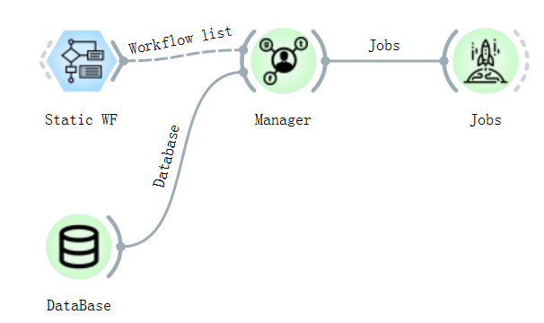

高通量总流程¶
ALKEMIE软件中每一个基础操作都被封装为一个控件，即下图所示的圆形图标。控件左侧接受数据传入，右侧将数据传出。控件左侧输入的数据经过控件处理后，从右侧输出接口通过实线连接传入下一相关控件，类似数据的流动，故称为数据流。中间虚线表示控件已连接，但数据暂未传输，实线表示数据传输成功。每个圆形控件双击之后即可完成详细参数配置，如果选中Apply automatically数据会自动向下流动，这也是ALKEMIE高通量自动流程的基础思想。
ALKEMIE软件中高通量计算总流程如下图所示。其中每个部分将在1.2-1.4中详细展开介绍。高通量计算总流程一共分为如下三个部分：

首先选择合适控件进行建模，通过高通量处理器控件（HT Preprocessor）统一处理之后，可在Data Table和Data Info中查看相关信息。高通量处理器控件（HT Preprocessor）是连接材料结构和第一性原理计算的关键控件。
高通量处理器输出接口可以连接第一性原理VASP实际计算流程相关的控件，即连接多个计算工作流。选择完不同的工作流之后，同样需要将所有不同的计算控件统一连接至Manager管理控件，该控件用来管理所需计算的任务并将任务发送至服务器上的数据库中。与此同时，需要设置数据库的位置（ip，端口，数据库名，用户，密码等信息），即在DataBase控件中的任务提交数据库和计算结果存储数据库。由于材料结构信息及计算结果的特殊性，不使用SQL这样的关系型数据库，因此我们整套软件选用了MongoDB作为远程服务器的数据库。
添加完工作流任务后，将管理控件连接至Jobs任务提交控件，即可开始计算。
高通量建模基础概念（MultiPoscar）¶
ALKEMIE软件可通过控件POSCAR、Builder、Multi POSCAR和Finder完成自动建模的过程，用户可根据需要自主选择最适合的建模方式。该模块还包含结构可视化部分但是需要安装VESTA软件，如果需要可视化，可以自行下载安装（http://jp-minerals.org/vesta/en/），并通过Plotter中Viewer控件可视化，此处会在后面模块详细解释，高通量计算模块不涉及结构可视化。
Note
在材料学中结构文件多数被存为POSCAR或者CIF的格式，此处POSCAR控件，Multi POSCAR控件专门用来解析这两种特定格式的结构文件，另外我们还支持不常见的XSF，XYZ等材料结构格式文件。ALKEMIE软件还可以支持多个结构文件同时传入。 该方法可以通过Multi POSCAR完成，如下图所示，一次选取7个结构文件，并可以通过下拉框指定结构可视化。选取Apply automatically之后结构会自动传递到高通量处理器中进行后面的计算。

工作流实例基础概念¶
每个工作流的输入接口必须是HT Preprocessor的输出接口，同时必须将结果传入Manager。通过HT Preprocessor可以连接多个工作流控件，实现多任务运行。当传入多个POSCAR并连接多个工作流控件时，会对每个POSCAR文件执行每个工作流的计算，例如高通量计算器中传入了2个POSCAR，并且连接了3个工作流控件，总计会提交2×3=6个任务。具体连接示意图如下：
{kind=link}
当高通量计算任务都连接到Manager的时候，此时工作流都已经被分配打包好了，每个工作流可能包含多个子任务，每个子任务包含更多的子命令，这样对于复杂的材料学中计算来说，用户通过这个软件可以操作的十分方便。比如想计算一个材料体系的能带，能带计算就会被当做一个工作流，其中包含四个子任务：结构优化，静态自洽计算，非自洽态密度计算以及能带计算，这些子任务都有相互依赖，这些依赖关系通过蓝色的工作流控件均以完美解决，使得非常易懂，易理解，易学习。
该软件目前共支持10个基础工作流，分别包括结构优化、能带结构计算、态密度计算、分子动力学模拟、HSE能带结构计算等等，每个控件详细内容及使用参见VASP计算部分。后面内容只详细讲解算例用到的两个工作流（静态计算和NEB工作流）。
Warning
需要特别注意：工作流控件的输出接口必须统一连接至Manager进行管理。
数据库配置及提交任务基础概念¶
Manager封装好任务之后，接下来是高通量计算的最后一步，将任务添加至有计算引擎的远程服务器对应的数据库中，该模块任务通过Database、Fworker和Jobs完成。从字面理解，Database是用来存储的数据库，该控件需要配置两个数据库，控件左侧为任务添加的数据库，右侧为结果存储的数据库。配置完数据库之后，需要通过Fworker完成远程计算引擎（安装第一性原理计算软件的集群）的配置。所有参数配置用户只用配置一次即可，软件会将用户配置添加到配置文件，并且每次运行自动读取参数。具体操作过程如下，所有参数配置完之后不需要点击任何按钮即可自动提交任务。
{kind=link}
数据分析实例¶
该软件不但能够支持任务的自动运行，还能对计算结果进行数据分析。
将任务计算结果从Jobs控件传入Analyzer控件，该控件可支持对energy，volumn，bandgap等多项的查询，将查询结果传入后续控件即可查看。
然后连接Distributions等控件，设置好相应的参数，点击plotting，相应的图像即可出现在右侧的Plot栏。